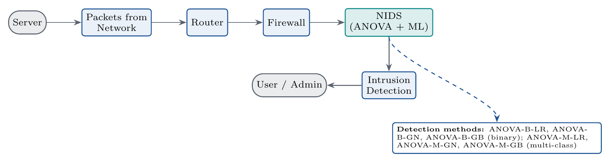
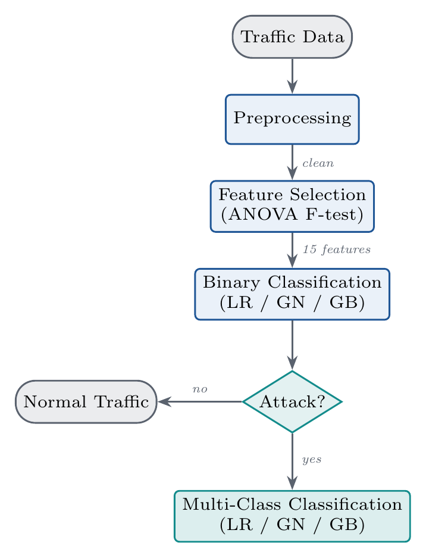

SYSTEM ARCHITECTURE
49 → 15 ATTRIBUTES
Two-Step Detection Pipeline & ANOVA F-Test Feature Selection

Fig. 1: End-to-End Enterprise Flow: Server → Packets → Router → Firewall → NIDS (ANOVA + ML) → Alert

Fig. 2: Two-Step Screening Logic: Traffic Data → Preprocessing → ANOVA F → Binary → Multi-Class
Plain English Explanation
Computer networks generate massive amounts of diagnostic information — 49 different variables for every single connection. Running heavy machine learning algorithms on all 49 numbers simultaneously slows down network routers and causes false alarms.
We designed a high-speed mathematical filter called the ANOVA F-Test. It checks how much each variable changes when an attack happens compared to when traffic is normal, and keeps only the top 15 most informative fields. This 69.4% reduction allows the security system to inspect traffic at lightning speed, first checking if an attack is happening (Stage 1), and then identifying the exact attack category (Stage 2).
Technical Deep Dive
- ANOVA F-Statistic Formula: Evaluates feature $X_i$ across groups $g \in \{1,\dots,k\}$ via between-group variance ($SSB_i$) and within-group variance ($SSW_i$):
F_i = [SSB_i / (k - 1)] / [SSW_i / (n - k)]
- Unified Feature Space: Rather than fitting different feature sets for binary and multi-class tasks, a single consistent 15-feature space is shared across both stages, preventing architectural drift and reducing runtime memory footprint.
- Zero Data Leakage Protocol: Categorical encoding, missing value imputation, and ANOVA F-ranking were fitted strictly inside a cross-validation loop on the training partition; the held-out test split was kept isolated until final scoring.